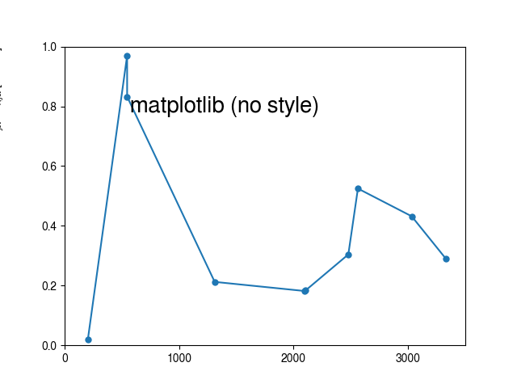
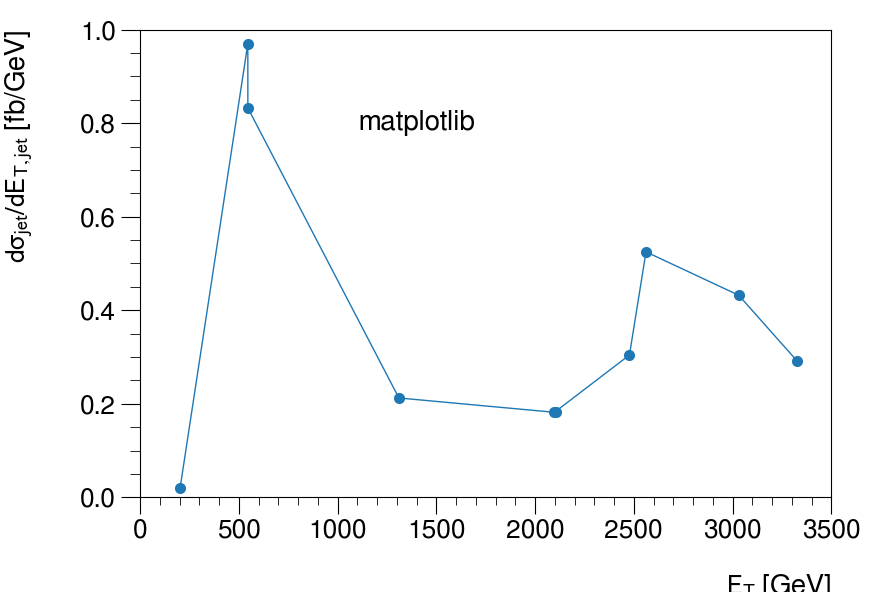
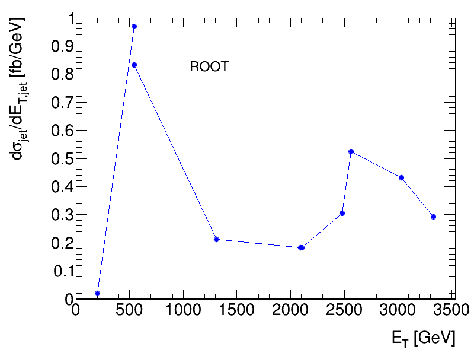

Plot a ROOT graph with matplotlib¶
This example demonstrates how a ROOT graph can be styled with simple attributes and displayed via ROOT or matplotlib.
  {kind=link}
{kind=link}
{kind=link}
Python source code: plot_matplotlib_graph.py
print(__doc__)
import ROOT
import numpy as np
from rootpy.plotting import Canvas, Graph
from rootpy.plotting.style import get_style, set_style
from rootpy.interactive import wait
import rootpy.plotting.root2matplotlib as rplt
import matplotlib.pyplot as plt
from matplotlib.ticker import AutoMinorLocator, MultipleLocator
# set the random seed
ROOT.gRandom.SetSeed(42)
np.random.seed(42)
# points
x = np.sort(np.random.random(10)) * 3500
y = np.random.random(10)
# set style for ROOT
set_style('ATLAS')
# create graph
graph = Graph(x.shape[0])
for i, (xx, yy) in enumerate(zip(x, y)):
graph.SetPoint(i, xx, yy)
# set visual attributes
graph.linecolor = 'blue'
graph.markercolor = 'blue'
graph.xaxis.SetTitle("E_{T} [GeV]")
graph.yaxis.SetTitle("d#sigma_{jet}/dE_{T,jet} [fb/GeV]")
graph.xaxis.SetRangeUser(0, 3500)
graph.yaxis.SetRangeUser(0, 1)
# plot with ROOT
canvas = Canvas()
graph.Draw("APL")
label = ROOT.TText(0.4, 0.8, "ROOT")
label.SetTextFont(43)
label.SetTextSize(25)
label.SetNDC()
label.Draw()
canvas.Modified()
canvas.Update()
# plot with matplotlib
def plot_with_matplotlib():
fig, axes = plt.subplots()
axes.plot(x, y, 'o-', markeredgewidth=0)
axes.set_xlabel(r"$E_T$ [GeV]",
horizontalalignment="right", x=1, labelpad=20)
axes.set_ylabel(r"$d\sigma_{jet}/dE_{T,jet}$ [fb/GeV]",
horizontalalignment="right", y=1, labelpad=32)
axes.set_xlim(0, 3500)
axes.set_ylim(0, 1)
return fig, axes
# plot without style
fig1, axes1 = plot_with_matplotlib()
axes1.text(0.4, 0.8, 'matplotlib (no style)',
verticalalignment='center', horizontalalignment='center',
transform=axes1.transAxes, fontsize=20)
# plot with ATLAS style
set_style('ATLAS', mpl=True)
fig2, axes2 = plot_with_matplotlib()
axes2.text(0.4, 0.8, 'matplotlib',
verticalalignment='center', horizontalalignment='center',
transform=axes2.transAxes, fontsize=20)
axes2.xaxis.set_minor_locator(AutoMinorLocator())
axes2.yaxis.set_minor_locator(AutoMinorLocator())
if not ROOT.gROOT.IsBatch():
plt.show()
# wait for you to close the canvas before exiting
wait(True)
Total running time of the example: 0.10 seconds